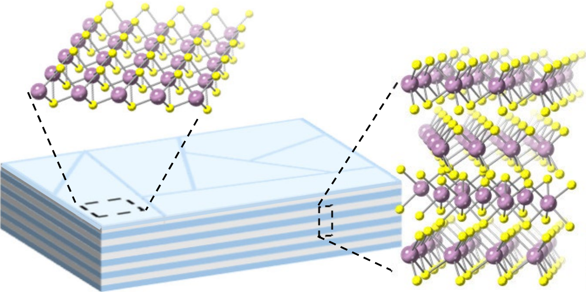
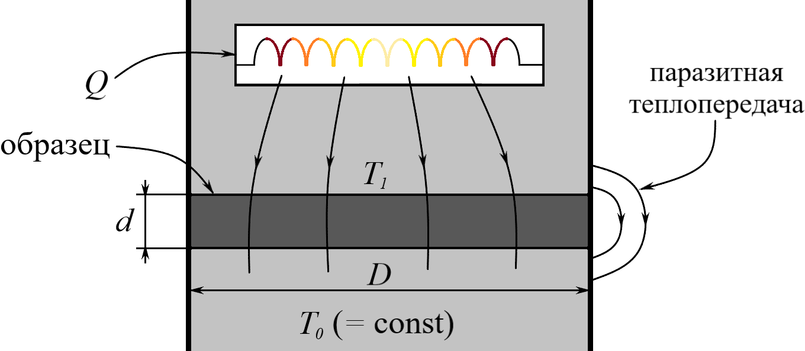
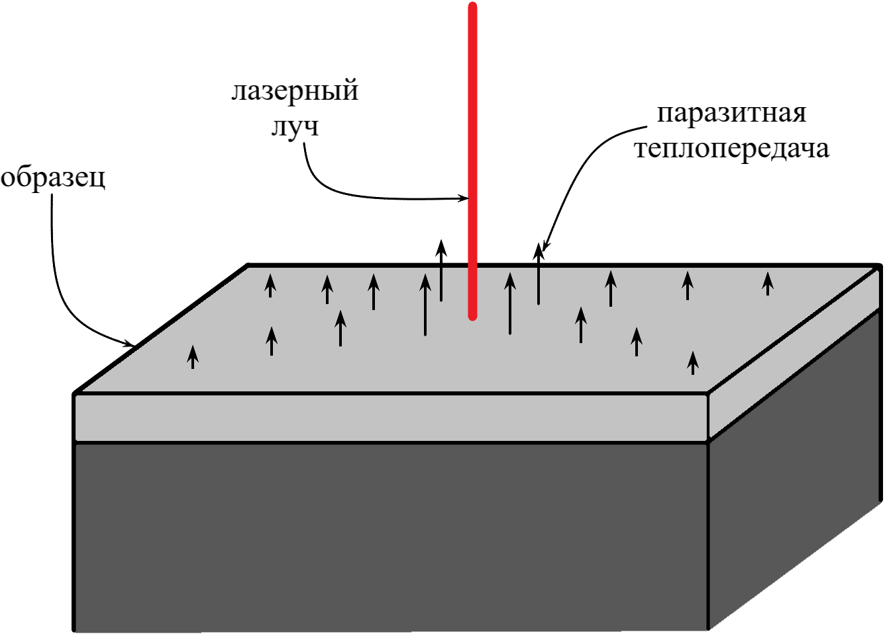

X23 (2023) — English translation
In September 2021, scientists from the University of Chicago created a material with a record anisotropy of thermal conductivity: the thermal conductivity of the material along a selected direction turned out to be almost a thousand times less than the thermal conductivity in directions perpendicular to it! They were able to achieve this effect by layering two-dimensional layers of atoms on top of each other in random orientations, as shown in Figure $\it1$. While the theoretical side of this effect is quite complex and goes far beyond the classical school curriculum, the experimental side turns out to be accessible to understanding and processing. In this problem, we explore exactly how scientists were able to measure the thermal conductivity of a material along different directions.

To solve the problem, you will need a generalization of the least squares method to the case of an arbitrary, not necessarily linear, dependence. Let a set of points $(x_i, y_i)$ be given as an experimental dependence, which we want to model with some function $f=f(x, a_1, a_2, \dots)$, where $a_1, a_2, \dots$ are parameters that can be varied. By the definition of least squares, the variation of the parameters must result in the following sum being the minimum: $$ S = \sum_i~\Delta y_i^2 = \sum_i~\left(y_i-f(x_i, a_1, a_2, \dots)\right)^2 \rightarrow \min_{a_1, a_2, \dots} $$Задача минимизации этой суммы сводится к решению системы уравнений:⟦0⟧где символ $\partial$ denotes differentiation with respect to the parameter specified in the denominator when the other parameters are fixed.
To measure thermal conductivity in the direction perpendicular to the layers, a homogeneous sample with a diameter of $D=1\ мм$ and a thickness of $d$ is clamped between two flat plates of materials with high thermal conductivity, one of which is maintained at a constant temperature $T_0$, and the other is supplied with a constant power $Q=3.1\cdot10^{-4}\ Вт$. After thermal equilibrium is established, the temperature $T_1$ of the second plate is measured, from which the difference $\Delta T=T_1-T_0$ is obtained. To clarify the nature of the mechanisms of thermal conductivity, researchers also need to test whether the thermal conductivity of a material depends on its temperature.

The table in the answer sheet gives you the values of the temperature difference $\Delta T$ depending on the thickness of the sample $d$ for three different temperatures $T_0$ and two different materials - molybdenum sulfides $\rm(MoS_2)$ and tungsten sulfides $\rm(WS_2)$. In an ideal experiment, the temperature difference $\Delta T$ could be described by the formula:\begin{equation}\Delta T=Ad,\tag1\end{equation}where $A=\cfrac{4Q}{\pi\varkappa_\perp D^2}$ and $\varkappa_\perp$ are the thermal conductivity coefficient in the direction perpendicular to the layers. However, heat exchange between two plates occurs not only due to thermal conductivity, but also due to other methods of heat transfer. They can be taken into account with good accuracy by adding a correction term to equation $(1)$:\begin{equation}\Delta T=Ad-BT_0^{1/2}d^{3/2}.\tag2\end{equation}
We will assume that thermal conductivity $\varkappa_\perp$ does not depend on temperature if the relation is satisfied: \[\Delta A < \overline BT_{0\max}^{1/2}d_\max^{1/2},\] where $\Delta A$ is the maximum difference between the values $A$ obtained in the previous paragraph, and $\overline B$ is the arithmetic mean of the values $B$, $d_\max=200\ мкм$, $T_{0\max}=373\ К$ obtained in the previous paragraph.
To measure longitudinal thermal conductivity, a sample of thickness $d$ is placed on a horizontal surface of a material that is very poorly conductive to heat and illuminated at the center with a thin laser beam of constant power. As a result, a certain temperature distribution is established in the sample, which can be obtained by solving the heat conduction equation in polar coordinates. The temperature at large distances from the center of the laser beam is considered to be $T_0$. To find out how much the temperature of the sample at the center has increased, the researchers measure the power of the laser radiation reflected from it, since for small changes in temperature $\Delta T$ the reflection coefficient can be considered with good accuracy as a linear function of $\Delta T$. In addition, due to radiation and thermal conductivity between the sample and the environment, heat is dissipated from its surface with a power proportional to the temperature difference $\Delta T$. This leads to the fact that the real $\Delta T$ always turns out to be less than the predicted one and has a certain limit $\Delta T_\max$.

Thus, we will be interested in two asymptotic cases: $\it1)$ the case of a large sample thickness $d$. In this case, the contribution of thermal conductivity inside the sample will be dominant, and the temperature change can be described by the equation:\begin{equation}\Delta T=\frac Ad-\frac B{d^2},\tag3\end{equation}where $A=\cfrac{A_0}{\varkappa_\parallel}$, $A_0=9.43\ мВт$ and $B$ are some constants; $\it2)$ case of small sample thickness $d$. In this case, the contribution of thermal conductivity and radiation between the sample and the environment will be dominant, and the temperature change can be described by the equation:\begin{equation}\Delta T=\Delta T_{\max}-Cd,\tag4\end{equation}where $C$ is a certain coefficient. The table in the answer sheet gives you the temperature difference $\Delta T$ depending on the thickness of the sample $d$ for three different temperatures $T_0$ and two different materials - molybdenum sulfides $\rm(MoS_2)$ and tungsten sulfides $\rm(WS_2)$. When solving the problem, consider that half of the points with a larger $d$ correspond to the case $\it1)$, and the other half to the case $\it2)$. Let us first consider the case $\it1)$.
This time the values of $\varkappa_\parallel$ clearly depend on temperature. It can be assumed that they satisfy the power law $\varkappa_\parallel\propto\cfrac1{T_0^n}$.
Let us now consider the case $\it2)$.
In order to improve experimental conditions in the future, scientists want to know whether heat is transferred from the sample to the environment in the first place - due to conduction or radiation. For this purpose, you can just use the obtained values $\Delta T_{\max}$. It can be shown that if the dominant contribution is made by thermal conductivity, then $\Delta T_{\max}\propto\cfrac1{\sqrt{T_0}}$, and if radiation, then $\Delta T_{\max}\propto\cfrac1{T_0^3}$. Let's try to approximate $\Delta T_{\max}$ by the power dependence $\Delta T_{\max}\propto\cfrac1{T_0^m}$.
Source: https://pho.rs/p/3116